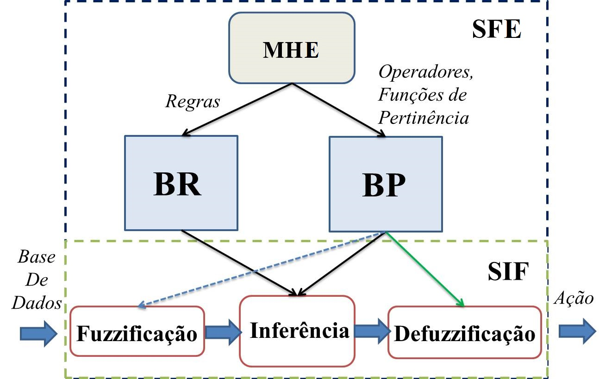
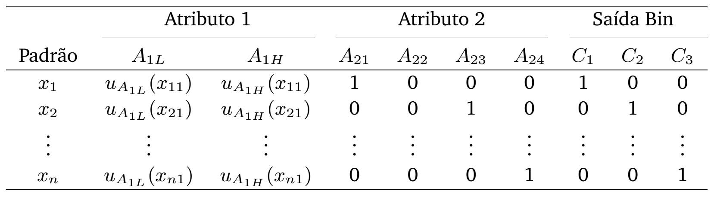
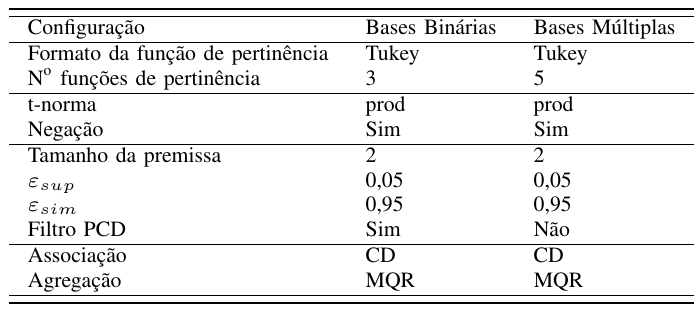
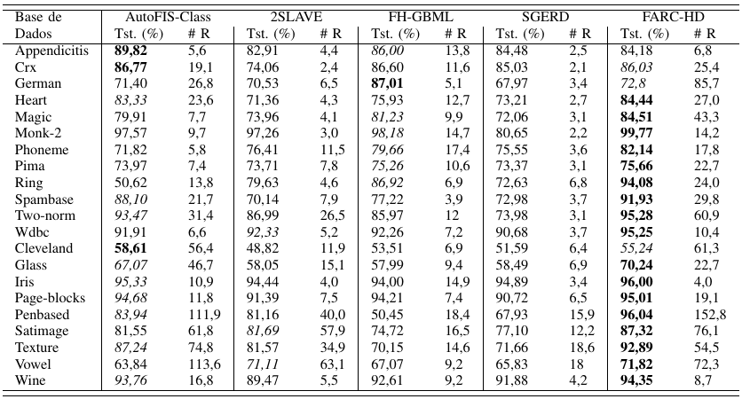
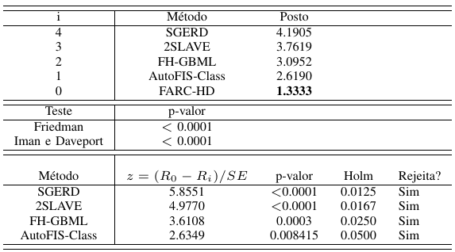

Jorge Paredes, Adriano Koshiyama, Marley Vellasco e Ricardo Tanscheit
Na maior parte de trabalhos na literatura, eles misturam-se com os Algoritmos Evolucionários

Formatos triangulares:
Binarização dos atributos categóricos

jk
Geração das premissas
As configurações referenciais encontradas para os tipos de bases de dados são: 

Resultado do teste de Friedman e Holm para a comparação emtre as acurácias (do teste) obtidas pelos modelos.

Laboratórios da PUC-RIO
Obrigado pela atenção
Contacto:
[jparedes, adriano,
marley,
ricardo] @ ele.puc-rio.br